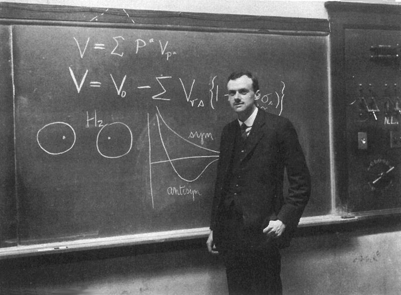
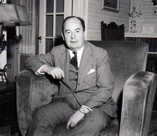

%
%\[ \DeclarePairedDelimiters{\set}{\{}{\}} \DeclareMathOperator*{\argmax}{argmax} \]
SURELY, after 62 years, we should have an exact formulation of some serious part of quantum mechanics? By ‘exact’ I do not of course mean ‘exactly true’. I mean only that the theory should be fully formulated in mathematical terms, with nothing left to the discretion of the theoretical physicist… until workable approximations are needed in applications. By ‘Serious’ I mean that some substantial fragment of physics shoud be covered. Nonrelativisitc ‘particle’ quantum mechanics, perhaps with the inclusion of the electromagnetic field and a cut-off interaction, is serious enough. For it covers ‘a large part of physics and the whole of chemistry’ (P. A. M. Dirac 1929 Proc. R. Soc. A 123 714). I mean too, by ‘serious’, that ‘apparatus’ should not be separated off from the rest of the world into black boxes, as if it were not made of atoms and not ruled by quantum mechanics.
The question, ’ …should we not have an exact formulation …?’, is often answered by one or both of two others. I will try to reply to them: Why bother? Why not look it up in a good book?
Why bother?
Perhaps the most distinguished of ‘why bother?’ers has been Dirac (1963 Sci. American 208 May 45). He divided the difficulties of quantum mechanics into two classes, those of the first class and those of the second. The second-class difficulties were essentially the infinities of relativistic quantum field theory. Dirac was very disturbed by these, and was not impressed by the ’renormalisation’ procedures by which they are circumvented. Dirac tried hard to eliminate these second-class difficulties, and urged others to do likewise. The first-class difficulties concerned the role of the ‘observer’, ‘measurement’, and so on. Dirac thought that these problems were not ripe for solution, and should be left for later. He expected developments in the theory which would make these problems look quite different. It would be a waste of effort to worry overmuch about them now, especially since we get along very well in practice without solving them.
Dirac gives at least this much comfort to those who are troubled by these questions: he sees that they exist and are difficult. Many other distinguished physicists do not. It seems to me that it is among the most sure-footed of quantum physicists, those who have it in their bones, that one finds the greatest impatience with the idea that the ‘foundations of quantum mechanics’ might need some attention. Knowing what is right by instinct, they can become a little impatient with nitpicking distinctions between theorems and assumptins. When they do admit some ambiguity in the usual formulations, they are likely to insist that ordinary quantum mechanics is just fone ‘for all practical purposes’. I agree with them about that: ORDINARY QUANTUM MECHANICS (as far as I know) IS JUST FINE FOR ALL PRACTICAL PURPOSES.
Even when I begin by insisting on this myself, and in capital letters, it is likely to be insisted on repeatedly in the course of the discussion. So it is convenient to have an abbreviation for the last phrase: FOR ALL PRACTICAL PURPOSES = FAPP.
I can imagine a practical geometer, say an architect, being impatient with Euclid’s fifth postulate, or Playfair’s axiom: of course in a plane, through a given point, you can draw only one straight line parallel to a given straight line, at least FAPP. The reasoning of such a natural geometer might not aim at pedantic precision, and new assertions, known in the bones to be right, even if neither among the originally stated assumptions nor derived from them as theorems, might come in at any stage. Perhaps these particular lines in the argument should, in a systematic presentation, be disting- uished by this label - FAPP - and the conclusions likewise: QED FAPP.
I expect that mathematicians have classified such fuzzy logics. Certainly they have been much used by physicists.
But is there not something to be said for the approach of Euclid? Even now that we know that Euclidean geometry is (in some sense) not quite true? Is it not good to know what follows from what, even if it is not really necessary FAPP? Suppose for example that quantum mechanics were found to resist precise formulation. Suppose that when formulation beyond FAPP is attempted, we find an unmovable finger obstinately pointing outside the subject, to the mind of the observer, to the Hindu scriptures, to God, or even only Gravitation? Would not that be very, very interesting? But I must say at once that it is not mathematical precision, but physical, with which I will be concerned here. I am not squeamish about delta functions. From the present point of view, the approach of von Neumann’s book is not preferable to that of Dirac’s.
Why not look it up in a good book?
But which good book? In fact it is seldom that a ‘no problem’ person is, on reflection, willing to endorse a treatment already in the literature. Usually the good unproblematic formulation is still in the head of the person in question, who has been too busy with practical things to put it on paper. I think that this reserve, as regards the formulations already in the good books, is well founded. For the good books known to me are not much concerned with physical precision. This is clear already from their vocabulary.

Here are some words which, however legitimate and necessary in application, have no place in a formulation with any pretension to physical precision: system, apparatus, environment, microscopic, macroscopic, reversible, irreversible, observable, information, measurement.
The concepts ‘system’, ‘apparatus’, ‘environment’, immediately imply an artificial division of the world, and an intention to neglect, or take only schematic account of, the interaction across the split. The notions of ‘microscopic’ and ‘macroscopic’ defy precise definition. So also do the notions of ‘reversible’ and ‘irreversible’. Einstein said that it is theory which decides what is ‘observable’. I think he was right - ‘observation’ is a complicated and theory-laden business. Then that notion should not appear in the formulation of fundamental theory. Information? Whose information? Information about what?
On this list of bad words from good books, the worst of all is ‘measurement’. It must have a section to itself.
Against ‘Measurement’
When I say that the word ‘measurement’ is even worse than the others, I do not have in mind the use of the word in phrases like ‘measure the mass and width of the \(Z\) boson’. I do have in mind its use in the fundamental interpretive rules of quantum mechanics. For example, here they are as given by Dirac (Quantum Mechanics Oxford University Press 1930):
‘… any result of a measurement of a real dynamical variable is one of its eigenvalues …’
‘… if the measurement of the observable … is made a large number of times the average of all the results obtained will be …’
‘… a measurement always causes the system to jump into an eigenstate of the dynamical variable that is being measured …’
It would seem that the theory is exclusively concerned about ‘results of measurement’, and has nothing to say about anything else. What exactly qualifies some physical systems to play the role of ‘measurer’? Was the wavefunction of the world waiting to jump for thousands of millions of years until a single-celled living creature appeared? Or did it have to wait a little longer, for some better qualified system … with a Ph D? If the theory is to apply to anything but highly idealised laboratory operations, are we not obliged to admit that more or less ‘measurement-like’ processes are going on more or less all the time, more or less everywhere? Do we not have jumping then all the time?
The first charge against ‘measurement’, in the fundamental axioms of quantum mechanics, is that it anchors there the shifty split of the world into ‘system’ and ‘apparatus’. A second charge is that the word comes loaded with meaning from everyday life, meaning which is entirely inappropriate in the quantum context. When it is said that something is ‘measured’ it is difficult not to think of the result as referring to some pre-existing property of the object in question. This is to disregard Bohr’s insistence that in quantum phenomena the apparatus as well as the system is essentially involved. If it were not so, how could we understand, for example, that ‘measurement’ of a component of ‘angular momentum’ — in an arbitrarily chosen direction — yields one of a discrete set of values? When one forgets the role of the apparatus, as the word ‘measurement’ makes all too likely, one despairs of ordinary logic - hence ‘quantum logic’. When one remembers the role of the apparatus, ordinary logic is just fine.
In other contexts, physicists have been able to take words from everyday language and use them as technical terms with no great harm done. Take for example, the ‘strangeness’, ‘charm’, and ‘beauty’ of elementary particle physics. No one is taken in by this ‘baby talk’, as Bruno Touschek called it. Would that it were so with ‘measurement’. But in fact the word has had such a damaging effect on the discussion, that I think it should now be banned altogether in quantum mechanics.
The role of experiment
Even in a low-brow practical account, I think it would be good to replace the word ‘measurement’, in the formulation, by the word ‘experiment’. For the latter word is altogether less misleading. However, the idea that quantum mechanics, our most fundamental physical theory, is exclusively even about the results of experiments would remain disappointing.
In the beginning natural philosophers tried to understand the world around them. Trying to do that they hit upon the great idea of contriving artificially simple situations in which the number of factors involved is reduced to a minimum. Divide and conquer. Experimental science was born. But experiment is a tool. The aim remains: to understand the world. To restrict quantum mechanics to be exclusively about piddling laboratory operations is to betray the great enterprise. A serious formulation will not exclude the big world outside the laboratory.
The quantum mechanics of Landau and Lifshitz
Let us have a look at the good book Quantum Mechanics by L D Landau and E M Lifshitz. I can offer three reasons for this choice:
(\(i\)) It is indeed a good book.
(\(ii\)) It has a very good pedigree. Landau sat at the feet of Bohr. Bohr himself never wrote a systematic account of the theory. Perhaps that of Landau and Lifshitz is th e nearest to Bohr that we have.
(\(iii\)) It is the only book on the subject in which I have read every word.
This last came about because my friend John Sykes enlisted me as technical assistant when he did the English translation. My recommendation of this book has nothing to do with the fact that one per cent of what you pay for it comes to me.
LL emphasise, following Bohr, that quantum mechanics requires for its formulation ‘classical concepts’ - a classical world which intervenes on the quantum system, and in which experimental results occur (brackets after quotes refer to page numbers):
‘… It is in principle impossible … to formulate the basic concepts of quantum mechanics without using classical mechanics.’ (LL2)
‘… The possibility of a quantitative description of the motion of an electron requires the presence also of physical objects which obey classical mechanics to a sufficient degree of accuracy.’ (LL2)
‘… the ’classical object’ is usually called apparatus and its interaction with the electron is spoken of as measurement. However, it must be emphasised that we are here not discussing a process … in which the physicist-observer takes part. By measurement, in quantum mechanics, we understand any process of interaction between classical and quantum objects, occurring apart from and independently of any observer. The importance of the concept of measurement in quantum mechanics was elucidated by N Bohr.’ (LL2)
And with Bohr they insist again on the inhumanity of it all:
‘… Once again we emphasise that, in speaking of ’performing a measurement’, we refer to the interaction of an electron with a classical ‘apparatus’, which in no way presupposes the presence of an external observer.’ (LL3)
‘… Thus quantum mechanics occupies a very unusual place among physical theories: it contains classical mechanics as a limiting case, yet at the same time it requires this limiting case for its own formulation …’ (LL3)
‘… consider a system consisting of two parts: a classical apparatus and an electron … The states of the apparatus are described by quasiclassical wavefunctions \(\Phi_n(\xi)\) where the suffix \(n\) corresponds to the ’reading’ \(g_n\) of the apparatus, and \(\xi\) denotes the set of its coordinates. The classical nature of the apparatus appears in the fact that, at any given instant, we can say with certainty that it is in one of the known states \(\Phi_n\) with some definite value of the quantity \(g\); for a quantum system such an assertion would of course be unjustified.’ (LL21)
’… Let \(\Phi_0(\xi)\) be the wavefunction of the initial state of the apparatus … and \(\Psi(q)\) of the electron … the initial wavefunction of the whole system is the product \(\Psi(q)\Phi_0(\xi)\). After the measuring process we obtain a sum of the form
\[ \sum_n A_n(q) \Psi_n(\xi) \]
where the \(A_n(q)\) are some functions of \(q\).’ (LL22)
‘The classical nature of the apparatus, and the double role of classical mechanics as both the limiting case and the foundation of quantum mechanics, now make their appearance. As has been said above, the classical nature of the apparatus means that, at any instant, the quantity \(g\) (the ’reading of the apparatus’) has some definite value. This enables us to say that the state of the system apparatus \(+\) electron after the measurement will in actual fact be described, not by the entire sum, but by only the one term which corresponds to the ‘reading’ \(g_n\) of the apparatus \(A_n(q)\Phi_n(\xi)\). It follows from this that \(A_n(q)\) is proportional to the wavefunction of the electron after the measurement …’ (LL22)
This last is (a generalisation of) the Dirac jump, not an assumption here but a theorem. Note, however, that it has become a theorem only by virtue of another jump being assumed — that of a ‘classical’ apparatus into an eigenstate of its ‘reading’. It will be convenient later to refer to this last, the spontaneous jump of a macroscopic system into a definite macroscopic configuration, as the LL jump. And the forced jump of a quantum system as a result of ‘measurement’ — an external intervention — as the Dirac jump. I am not implying that these men were the inventors of these concepts. They used them in references that I can give.
According to LL (LL24), measurement (I think they mean the LL jump) ‘… brings about a new state … Thus the very nature of the process of measurement involves a far-reaching principle of irreversibility … causes the two directions of time to be physically non-equivalent, i.e. creates a difference between the future and the past.’
The LL formulation, with vaguely defined wavefunction collapse, when used with good taste and discretion, is adequate FAPP. It remains that the theory is ambiguous in principle, about exactly when and exactly how the collapse occurs, about what is microscopic and what is macroscopic, what quantum and what classical. We are allowed to ask: is such ambiguity dictated by experimental facts? Or could theoretical physicists do better if they tried harder?
The quantum mechanics of K Gottfried
The second good book that we will look at here is that of Kurt Gottfried (Quantum Mechanics Benjamin 1966). Again I can give three reasons for this choice:
(\(i\)) It is indeed a good book. The CERN library had four copies. Two have been stolen - already a good sign. The two that remain are falling apart from much use.
(\(ii\)) It has a very good pedigree. Kurt Gottfried was inspired by the treatments of Dirac and Pauli. His personal teachers were J D Jackson, J Schwinger, V F Weisskopf and J Goldstone. As consultants he had P Martin, C Schwartz, W Furry and D Yennie.
(\(iii\)) I have read some of it more than once.
This last came about as follows. I have often had the pleasure of discussing these things with Viki Weisskopf. Always he would end up with ‘you should read Kurt Gottfried’. Always I would say ‘I have read Kurt Gottfried’. But Viki would always say again next time ‘you should read Kurt Gottfried’. So finally I read again some parts of KG, and again, and again, and again.
At the beginning of the book there is a declaration of priorities (KG1): ‘… The creation of quantum mechanics in the period 1924-28 restored logical consistency to its rightful place in theoretical physics. Of even greater importance, it provided us with a theory that appears to be in complete accord with our empirical knowledge of all nonrelativistic phenomena …’
The first of these two propositions, admittedly the less important, is actually given rather little attention in the book. One can regret this a bit, in the rather narrow context of the particular present enquiry - into the possibility of precision. More generally, KG’s priorities are those of all right-thinking people.
The book itself is above all pedagogical. The student is taken gently by the hand, and soon finds herself or himself doing quantum mechanics, without pain - and almost without thought. The essential division of KG’s world into system and apparatus, quantum and classical, a notion that might disturb the student, is gently implicit rather than brutally explicit. No explicit guidance is then given as to how in practice this shifty division is to be made. The student is simply left to pick up good habits by being exposed to good examples.
KG declares that the task of the theory is (KG16)‘… to predict the results of measurements on the system …’ The basic structure of KG’s world is then \(W = S + R\) where \(S\) is the quantum system, and \(R\) is the rest of the world — from which measurements on \(S\) are made. When our only interpretive axioms are about measurement results (or findings (KG11)) we absolutely need such a base \(R\) from which measurements can be made. There can be no question then of identifying the quantum system \(S\) with the whole world \(W\). There can be no question - without changing the axioms — of getting rid of the shifty split. Sometimes some authors of ‘quantum measurement’ theories seem to be trying to do just that. It is like a snake trying to swallow itself by the tail. It can be done - up to a point. But it becomes embarrassing for the spectators even before it becomes uncomfortable for the snake.
But there is something which can and must be done — to analyse theoretically not removing the split, which cannot be done with the usual axioms, but shifting it. This is taken up in KG’s chapter 4: ‘The Measurement Process …” Surely ’apparatus’ can be seen as made of atoms? And it often happens that we do not know, or not well enough, either a priori or by experience, the functioning of some system that we would regard as ‘apparatus’. The theory can help us with this only if we take this ‘apparatus’ \(A\) out of the rest of the world \(R\) and treat it together with \(S\) as part of an enlarged quantum system \(S'\): \(R=A +R'\); \(S +A = S'\); \(W=S' + R'\). The original axioms about ‘measurement’ (whatever they were exactly) are then applied not at the \(S/A\) interface, but at the \(A/R'\) interface — where for some reason it is regarded as more safe to do so. In real life it would not be possible to find any such point of division which would be exactly safe. For example, strictly speaking it would not be exactly safe to take it between the counters, say, and the computer - slicing neatly through some of the atoms of the wires. But with some idealisation, which might ‘… be highly stylised and not do justice to the enormous complexity of an actual laboratory experiment … ” (KG165), it might be possible to find more than one not too implausible way of dividing the world up. Clearly it is necessary to check that different choices give consistent results (FAPP). A disclaimer towards the end of KG’s chapter 4 suggests that that, and only that, is the modest aim of that chapter (KG189):’… we emphasise that our discussion has merely consisted of several demonstrations of internal consistency … ” But reading reveals other ambitions.
Neglecting the interaction of \(A\) with \(R'\), the joint system \(S' = S + A\) is found to end, in virtue of the Schrödinger equation, after the ‘measurement’ on \(5\) by \(A\), in a state
\[ \Psi = \sum_n c_n \Psi_n \]
where the states \(\Psi_n\) are supposed each to have a definite apparatus pointer reading \(g_n\). The corresponding density matrix is
\[ \rho = \sum_n \sum_m c_n c_m^\ast \Psi_n \Psi_m^\ast \]
At this point KG insists very much on the fact that \(A\), and so \(S'\), is a macroscopic system. For macroscopic systems, he says, (KG186) ’. . . \(\text{tr}(A\hat{\rho}) = \text{tr}(A\rho)\) for all observables \(A\) known to occur in nature . . . ” where
\[ \hat{\rho} = \sum_n |c_n|^2 \Psi_n \Psi_n^\ast \]
i.e. \(\rho\) is obtained from \(\rho\) by dropping interference terms involving pairs of macroscopically different states. Then (KG188) ’… we are free to replace \(\rho\) by \(\hat{\rho}\) after the measurement, safe in the knowledge that the error will never be found …”
Now, while quite uncomfortable with the concept ‘all known observables’, I am fully convinced of the practical elusiveness, even the absence FAPP, of interference between macroscopically different states (J S Bell and M Nauenberg 1966 ‘The moral aspects of quantum mechanics’ in Preludes in Theoretical Physics North-Holland). So let us go along with KG on this and see where it leads: ‘… If we take advantage of the indistinguishability of \(\rho\) and \(\hat{\rho}\) to say that \(\hat{\rho}\) is the state of the system subsequent to measurement, the intuitive interpretation of \(c_m\) as a probability amplitude emerges without further ado. This is because \(c_m\) enters \(\hat{p}\) only via \(|c_m|^2\) , and the latter quantity appears in \(\hat{\rho}\) in precisely the same manner as probabilities do in classical statistical physics …’
I am quite puzzled by this. If one were not actually on the lookout for probabilities, I think the obvious interpretation of even \(\hat{p}\) would be that the system is in a state in which the various \(\Psi\) s somehow coexist: \(\Psi_1 \Psi_1^\ast\) and \(\Psi_2\Psi_2^\ast\) and …
This is not at all a probability interpretation, in which the different terms are seen not as coexisting, but as alternatives: \(\Psi_1 \Psi_1^\ast\) and \(\Psi_2\Psi_2^\ast\) or …
The idea that elimination of coherence, in one way or another, implies the replacement of ‘and’ by ‘or’, is a very common one among solvers of the ‘measurement problem’. It has always puzzled me.
It would be difficult to exaggerate the importance attached by KG to the replacement of \(\rho\) by \(\hat{\rho}\) : ‘… To the extent that nonclassical interference terms (such as \(c_mc_m^\ast\)) are present in the mathematical expression for \(\rho\) … the numbers \(c_m\) are intuitively uninterpretable, and the theory is an empty mathematical formalism . . .’ (KG187)
But this suggests that the original theory, ‘an empty mathematical formalism’, is not just being approximated — but discarded and replaced. And yet elsewhere KG seems clear that it is in the business of approximation that he is engaged, approximation of the sort that introduces irreversibility in the passage from classical mechanics to thermodynamics: ‘… In this connection one should note that in approximating \(\rho\) by \(\hat{\rho}\) one introduces irreversibility, because the time-reversed Schrödinger equation cannot retrieve \(\rho\) from \(\hat{\rho}\).’ (KG188)
New light is thrown on KG’s ideas by a recent recapitulation, referred to in the following as KGR (K Gottfried ‘Does quantum mechanics describe the collapse of the wavefunction?’ Presented at 62 Years of Uncertainty, Erice, 5-14 August 1989). This is dedicated to the proposition that (KGR1) ‘… the laws of quantum mechanics yield the results of measurements …’ These laws are taken to be (KGR1): ‘(\(1\)) a pure state is described by some vector in Hilbert space from which expectation values of observables are computed in the standard way; and (\(2\)) the time evolution is a unitary transformation on that vector’ (KGR1). Not included in the laws is (KGR1) von Neumann’s ‘… infamous postulate: the measurement act ’collapses’ the state into one in which there are no interference terms between different states of the measurement apparatus …’ Indeed, (KGR1) ‘the reduction postulate is an ugly scar on what would be a beautiful theory if it could be removed …’

Perhaps it is useful to recall here just how the infamous postulate is formulated byvon Neumann (J von Neumann 1955 Mathematical Foundations of Quantum Mechanics Princeton University Press). If we look back we find that what vN actually postulates (vN347, 418) is that ‘measurement’ — an external intervention by \(R\) on \(S\) — causes the state
\[ \phi = \sum_n c_n \phi_n \]
to jump, with various probabilities into \(\phi_1\) or \(\phi_2\) or …
From the ‘or’ here, replacing the ‘and’, as a result of external intervention, vN infers that the resulting density matrix, averaged over the several possibilities, has no interference terms between states of the system which correspond to different measurement results (vN347). I would emphasise several points here.
(\(i\)) von Neumann presents the disappearance of coherence in the density matrix, not as a postulate, but as a consequence of a postulate. The postulate is made at the wavefunction level, and is just that already made by Dirac for example.
(\(ii\)) I cannot imagine von Neumann arguing in the opposite direction, that lack of interference in the density matrix implies, without further ado, ‘or’ replacing ‘and’ at the wavefunction level. A special postulate to that effect would be required.
(\(iii\)) von Neumann is concerned here with what happens to the state of the system that has suffered the measurement — an external intervention. In application to the extended system \(S'(= S + A)\) von Neumann’s collapse would not occur before external intervention from \(R'\). It would be surprising if this consequence of external intervention on \(S'\) could be inferred from the purely internal Schrödinger equation for \(S'\). Now KG’s collapse, although justified by reference to ‘all known observables’ at the \(S'/R'\) interface, occurs after ‘measurement’ by \(A\) on \(S\), but before interaction across \(S'/R'\). Thus the collapse which KG discusses is not that which von Neumann infamously postulates. It is the LL collapse rather than that of von Neumann and Dirac.
The explicit assumption that expectation values are to be calculated in the usual way throws light on the subsequent falling out of the usual probability interpretation ‘without further ado’. For the rules for calculating expectation values, applied to projection operators for example, yield the Born probabilities for eigenvalues. The mystery is then: what has the author actually derived rather than assumed? And why does he insist that probabilities appear only after the butchering of \(\rho\) into \(\hat{\rho}\), the theory remaining an ‘empty mathematical formalism’ so long as \(\rho\) is retained? Dirac, von Neumann, and the others, nonchalantly assumed the usual rules for expectation values, and so probabilities, in the context of the unbutchered theory. Reference to the usual rules for expectation values also makes clear what KG’s probabilities are probabilities of. They are probabilities of ‘measurement’ results, of external results of external interventions, from \(R'\) on \(S'\) in the application. We must not drift into thinking of them as probabilities of intrinsic properties of \(S'\) independent of, or before, ‘measurement’. Concepts like that have no place in the orthodox theory.
Having tried hard to understand what KG has written, I will finally permit myself some guesses about what he may have in mind. I think that from the beginning KG tacitly assumes the Dirac rules at \(S'/R'\) - including the Dirac-von Neumann jump, required to get the correlations between results of successive (moral) measurements. Then, for ‘all known observables’, he sees that the ‘measurement’ results at \(S'/R'\) are AS IF (FAPP) the LL jump had occurred in \(S'\). This is important, for it shows how, FAPP, we can get away with attributing definite classical properties to ‘apparatus’ while believing it to be governed by quantum mechanics. But a jump assumption remains. LL derived the Dirac jump from the assumed LL jump. KG derives, FAPP, the LL jump from assumptions at the shifted split \(R'/S'\) which include the Dirac jump there.
It seems to me that there is then some conceptual drift in the argument. The qualification ‘as if (FAPP)’ is dropped, and it is supposed that the LL jump really takes place. The drift is away from the ‘measurement’ (… external intervention …) orientation of orthodox quantum mechanics towards the idea that systems, such as \(S'\) above, have intrinsic properties - independently of and before observation. In particular the readings of experimental apparatus are supposed to be really there before they are read. This would explain KG’s reluctance to interpret the unbutchered density matrix \(\rho\), for the interference terms there could seem to imply the simultaneous existence of different readings. It would explain his need to collapse \(\rho\) into \(\hat{\rho}\), in contrast with von Neumann and the others, without external intervention across the last split \(S'/R'\). It would explain why he is anxious to obtain this reduction from the internal Schrödinger equation of \(S'\). (It would not explain the reference to ‘all known observables’ - at the \(S'/R'\) split.) The resulting theory would be one in which some ‘macroscopic’ ‘physical attributes’ have values at all times, with a dynamics that is related somehow to the butchering of \(\rho\) into \(\hat{\rho}\) — which is seen as somehow not incompatible with the internal Schrödinger equation of the system. Such a theory, assuming intrinsic properties, would not need external intervention, would not need the shifty split. But the retention of the vague word ‘macroscopic’ would reveal limited ambition as regards precision. To avoid the vague ‘microscopic’ ‘macroscopic’ distinction — again a shifty split —I think one would be led to introduce variables which have values even on the smallest scale. If the exactness of the Schrodinger equation is maintained, I see this leading towards the picture of de Broglie and Bohm.
The quantum mechanics of N G van Kampen
Let us look at one more good book, namely Physica A 153 (1988), and more specifically at the contribution: ‘Ten theorems about quantum mechanical measurements’, by N G van Kampen. This paper is distinguished especially by its robust common sense. The author has no patience with ‘… such mind-boggling fantasies as the many world interpretation …” (vK98). He dismisses out of hand the notion of von Neumann, Pauli, Wigner — that ’measurement’ might be complete only in the mind of the observer: ‘… I find it hard to understand that someone who arrives at such a conclusion does not seek the error in his argument’ (vKlOl). For vK ‘… the mind of the observer is irrelevant … the quantum mechanical measurement is terminated when the outcome has been macroscopically recorded … ” (vKlOl). Moreover, for vK, no special dynamics comes into play at ’measurement’: ’… The measuring act is fully described by the Schrödinger equation for object system and apparatus together. The collapse of the wavefunction is a consequence rather than an additional postulate … ” (vK97).
After the measurement the measuring instrument, according to the Schrödinger equation, will admittedly be in a superposition of different readings. For example, Schrödinger’s cat will be in a superposition \(|\textit{cat} \rangle = a|\textit{life}\rangle + b|\textit{death}\rangle\). And it might seem that we do have to deal with ‘and’ rather than ‘or’ here, because of interference: ’… for instance the temperature of the cat … the expectation value of such a quantity \(G\) … is not a statistical average of the values \(G_{ll}\) and \(G_{dd}\) with probabilities \(|a|^2\) and \(|b|^2\), but contains cross terms between life and death …” (vK103).
But vK is not impressed: ’The answer to this paradox is again that the cat is macroscopic. Life and death are macrostates containing an enormous number of eigenstates \(|l\rangle\) and \(|d\rangle\) …
\[ |\textit{cat}\rangle = \sum_l a_l|l\rangle + \sum_d b_d | d\rangle \]
… the cross terms in the expression for \(\langle G\rangle\) … as there is such a wealth of terms, all with different phases and magnitudes, they mutually cancel and their sum practically vanishes. This is the way in which the typical quantum mechanical interference becomes inoperative between macrostates . . .’ (vK103).
This argument for no interference is not, it seems to me, by itself immediately convincing. Surely it would be possible to find a sum of very many terms, with different amplitudes and phases, which is not zero? However, I am convinced anyway that interference between macroscopically different states is very, very elusive. Granting this, let me try to say what I think the argument to be, for the collapse as a ‘consequence’ rather than an additional postulate.
The world is again divided into ‘system’, ‘apparatus’, and therest:\(W=S+A+R' =S' +R'\). At first,the usual rules for quantum ‘measurements’ are assumed at the \(S'/R'\) interface - including the collapse postulate, which dictates correlations between results of ‘measurements’ made at different times. But the ‘measurements’ at \(S'/R'\) which can actually be done, FAPP, do not show interference between macroscopically different states of \(S'\). It is ax t/the ‘and’ in the superposition had already, before any such measurements, been replaced by ‘or’. So the ‘and’ has already been replacedby’or’. It is as if it were so… so it is so.
This may be good FAPP logic. If we are more pedantic, it seems to me that we do not have here the proof of a theorem, but a change of the theory — at a strategically well chosen point. The change is from a theory which speaks only of the results of external interventions on the quantum system, \(S'\) in this discussion, to one in which that system is attributed intrinsic properties — deadness or aliveness in the case of cats. The point is strategically well chosen in that the predictions for results of ‘measurements’ across \(S'/R'\) will still be the same … FAPP.
Whether by theorem or by assumption, we end up with a theory like that of LL , in which superpositions of macroscopically different states decay somehow into one of the members. We can ask as before just how and how often it happens. If we really had a theorem, the answers to these questions would be calculable. But the only possibility of calculation in schemes like those of KG and vK involves shifting further the shifty split - and the questions with it.
For most of the paper, vK’s world seems to be the petty world of the laboratory, even one that is not treated very realistically: ‘… in this connection the measurement is always taken to be instantaneous …’ (vKlOO)
But almost at the last moment a startling new vista opens up - an altogether more vast one:
’Theorem IX: The total system is described throughout by the wave vector \(\Psi\) and has therefore zero entropy at all times …
This ought to put an end to speculations about measure- ments being responsible for increasing the entropy of the universe. (It won’t of course.)’ (vKlll)
So vK, unlike many other very practical physicists, seems willing to consider the universe as a whole. His universe, or at any rate some ‘total system’, has a wavefunction, and that wavefunction satisfies a linear Schrödinger equation. It is clear, however, that this wavefunction cannot be the whole story of vK’s totality. For it is clear that he expects the experiments in his laboratories to give definite results, and his cats to be dead or alive. He believes then in variables \(X\) which identify the realities, in a way which the wavefunction, without collapse, can not. His complete kinematics is then of the de Broglie-Bohm ‘hidden variable’ dual type: (\(\Psi(t,q)\), \(X(t)\)).
For the dynamics, he has exactly the Schrödinger equation for \(\Psi\), but I do not know exactly what he has in mind for the \(X\), which for him would be restricted to some ‘macroscopic’ level. Perhaps indeed he would prefer to remain somewhat vague about this, for
‘Theorem IV: Whoever endows \(\Psi\) with more meaning than is needed for computing observable phenomena is responsible for the consequences …’ (vK99)
Towards a precise quantum mechanics
In the beginning, Schrödinger tried to interpret his wavefunction as giving somehow the density of the stuff of which the world is made. He tried to think of an electron as represented by a wavepacket - a wavefunction appreciably different from zero only over a small region in space. The extension of that region he thought of as the actual size of the electron - his electron was a bit fuzzy. At first he thought that small wavepackets, evolving according to the Schrodinger equation, would remain small. But that was wrong. Wavepackets diffuse, and with the passage of time become indefinitely extended, according to the Schrodinger equation. But however far the wavefunction has extended, the reaction of a detector to an electron remains spotty. So Schrödinger’s ‘realistic’ interpretation of his wavefunction did not survive.
Then came the Born interpretation. The wavefunction gives not the density of stuff, but gives rather (on squaring its modulus) the density of probability. Probability of what, exactly? Not of the electron being there, but of the electron being found there, if its position is ‘measured’.
Why this aversion to ‘being’ and insistence on ‘finding’? The founding fathers were unable to form a clear picture of things on the remote atomic scale. They became very aware of the intervening apparatus, and of the need for a ‘classical’ base from which to intervene on the quantum system. And so the shifty split.
The kinematics of the world, in this orthodox picture, is given by a wavefunction (maybe more than one?) for the quantum part, and classical variables —variables which have values - for the classical part: (\(\Psi(t,q \ldots)\), \(X(t)\)). The \(X\text{s}\) are somehow macroscopic. This is not spelled out very explicitly. The dynamics is not very precisely formulated either. It includes a Schrödinger equation for the quantum part, and some sort of classical mechanics for the classical part, and ‘collapse’ recipes for their interaction.
It seems to me that the only hope of precision with the dual \((\Psi,\,x)\) kinematics is to omit completely the shifty split, and let both \(\Psi\) and \(x\) refer to the world as a whole. Then the \(x\text{s}\) must not be confined to some vague macroscopic scale, but must extend to all scales. In the picture of de Broglie and Bohm, every particle is attributed a position \(x(t)\). Then instrument pointers — assemblies of particles have positions, and experiments have results. The dynamics is given by the world Schrödinger equation plus precise ‘guiding’ equations prescribing how the \(x(t)\) s move under the influence of \(\Psi\). Particles are not attributed angular momenta, energies, etc, but only positions as functions of time. Peculiar ‘measurement’ results for angular momenta, energies, and so on, emerge as pointer positions in appropriate experimental setups. Considerations of the KG and vK type, on the absence (FAPP) of macroscopic interference, take their place here, and an important one, in showing how usually we do not have (FAPP) to pay attention to the whole world, but only to some subsystem and can simplify the wavefunction … FAPP.
The Born-type kinematics \((\Psi,\, X)\) has a duality that the original ‘density of stuff picture of Schrödinger did not. The position of the particle there was just a feature of the wavepacket, not something in addition. The Landau-Lifshitz approach can be seen as maintaining this simple nondual kinematics, but with the wavefunction compact on a macroscopic rather than microscopic scale. We know, they seem to say, that macroscopic pointers have definite positions. And we think there is nothing but the wavefunction. So the wavefunction must be narrow as regards macroscopic variables. The Schrödinger equation does not preserve such narrowness (as Schrödinger himself drama- tised with his cat). So there must be some kind of ’collapse’ going on in addition, to enforce macroscopic narrowness. In the same way, if we had modified Schrödinger’s evolution somehow we might have prevented the spreading of his wavepacket electrons. But actually the idea that an electron in a ground-state hydrogen atom is as big as the atom (which is then perfectly spherical) is perfectly tolerable - and maybe even attractive. The idea that a macroscopic pointer can point simultaneously in different directions, or that a cat can have several of its nine lives at the same time, is harder to swallow. And if we have no extra variables X to express macroscopic definiteness, the wave- function itself must be narrow in macroscopic directions in the configuration space. This the Landau-Lifshitz collapse brings about. It does so in a rather vague way, at rather vaguely specified times.
In the Ghiradi-Rimini-Weber scheme (see the box and the contributions of Ghiradi, Rimini, Weber, Pearle, Gisin and Diosi presented at 62 Years of Uncertainty, Erice, 5-14 August 1989) this vagueness is replaced by mathematical precision. The Schrödinger wavefunction even for a single particle, is supposed to be unstable, with a prescribed mean life per particle, against spontaneous collapse of a prescribed form. The lifetime and collapsed extension are such that departures of the Schrödinger equation show up very rarely and very weakly in few-particle systems. But in macroscopic systems, as a consequence of the prescribed equations, pointers very rapidly point, and cats are very quickly killed or spared.
The Ghiradi-Rimini-Weber scheme
The GRW scheme represents a proposal aimed to overcome the difficulties of quantum mechanics discussed by John Bell in this article. The GRW model is based on the acceptance of the fact that the Schrödinger dynamics, governing the evolution of the wavefunction, has to be modified by the inclusion of stochastic and nonlinear effects. Obviously these modifications must leave practically un- altered all standard quantum predictions about microsystems.
To be more specific, the GRW theory admits that the wavefunction, besides evolving through the standard Hamiltonian dynamics, is subjected, at random times, to spontaneous processes corresponding to localisations in space of the microconstituents of any physical system. The mean frequency of the localisations is extremely small, and the localisation width is large on an atomic scale. As a consequence no prediction of standard quantum formalism for microsystems is changed in any appreciable way.
The merit of the model is in the fact that the localisation mechanism is such that its frequency increases as the number of constituents of a composite system ncreases. In the case of a macroscopic object (containing an Avogadro number of constituents) linear superpositions of states describing pointers ‘pointing simultaneously in different directions’ are dynamically suppressed in extremely short times. As stated by John Bell, in GRW ‘Schrödinger’s cat is not both dead and alive for more than a split second’.
The original and technically detailed presentation of GRW can be found in 1986 Phys. Rev D 34 470; a brilliant and simple presentation has been given by John Bell in Schrödinger: Centenary Celebration of a Polymath C W Kilmister (ed) 1987 Cambridge University Press p41
A general discussion of the conceptual implications of the scheme can be found in 1988 Foundation of Physics 81 1
The GRW model has been the object of many recent papers and a lively debate on its implications is going on. Recently the model has been generalised to cover the case of systems of identical particles and to meet the requirements of relativis- tic invariance.
The orthodox approaches, whether the authors think they have made derivations or assumptions, are just fine FAPP — when used with the good taste and discretion picked up from exposure to good examples. At least two roads are open from there towards a precise theory, it seems to me. Both eliminate the shifty split. The de Broglie-Bohm-type theories retain, exactly, the linear wave equation, and so necessarily add complementary variables to express the non-waviness of the world on the macroscopic scale. The GRW-type theories have nothing in their kinematics but the wavefunction. It gives the density (in a multidimensional configuration space!) of stuff. To account for the narrowness of that stuff in macroscopic dimensions, the linear Schrodinger equation has to be modified, in the GRW picture by a mathematically prescribed spontaneous collapse mechanism.
The big question, in my opinion, is which, if either, of these two precise pictures can be redeveloped in a Lorentz invariant way.
‘… All historical experience confirms that men might not achieve the possible if they had not, time and time again, reached out for the impossible.’ Max Weber
‘.. we do not know where we are stupid until we stick our necks out.’ R P Feynman
Further reading
J S Bell and M Nauenberg 1966 The moral aspect of quantum mechanics in Prelitdes in theoretical physics (in honour of V F Weisskopf) (North-Holland) 278-286
P A M Dirac 1929 Proc. R. Soc. A 123 714
P A M Dirac 1948 Quantum mechanics third edn (Oxford University Press)
P A M Dirac 1963 Sci. American 208 May 45
K Gottfried 1966 Quantum mechanics (Benjamin)
K Gottfried Does quantum mechanics describe the collapse of the wavefunction? Presented at 62 Years of Uncertainty, Erice, 5-14 August 1989
L D Landau and E M Lifshitz 1977 Quantum mechanics third edn (Pergamon)
N G van Kampen 1988 Ten theorems about quantum mechanical measurements Physica A 153 97-113
J von Neumann 1955 Mathematical foundations of quantum mechanics (Princeton University Press)